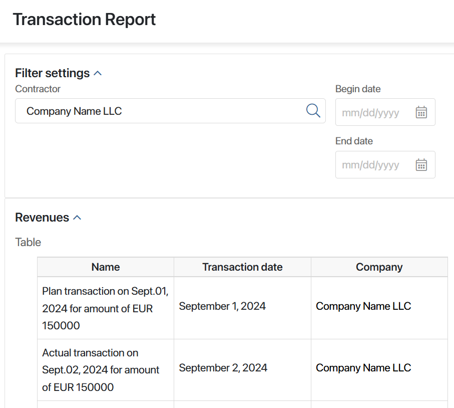
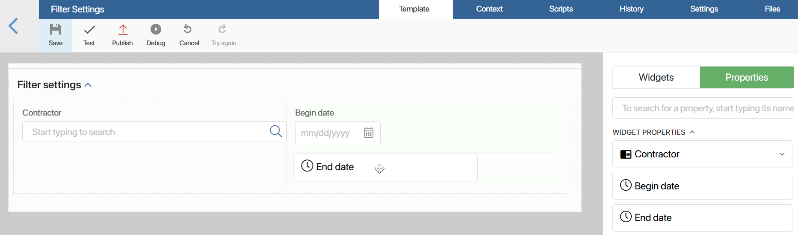
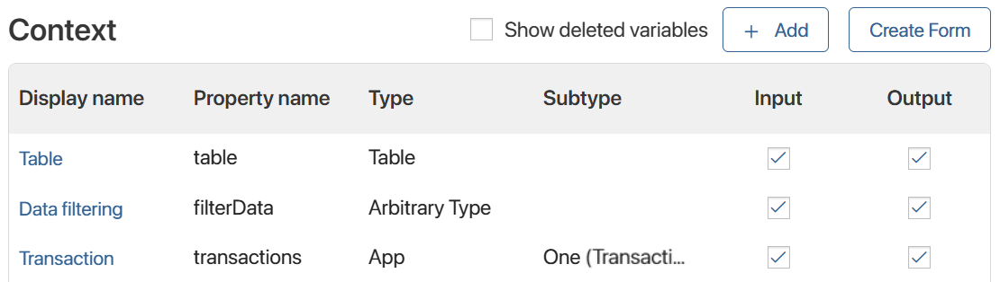
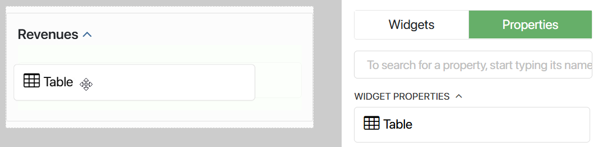

С помощью поля типа Событие в одном виджете можно создать пользовательское событие и передать его в другой виджет. Подробнее о том, как это работает и как настроить передачу данных от дочернего виджета в родительский, читайте в статье «Передать событие из дочернего в родительский виджет».
В данной статье рассмотрим комплексный пример с использованием различных опций и дополнительных переменных, когда событие передаётся между двумя дочерними виджетами, размещёнными в одном родительском.
Предположим, что в системе создана страница Отчёт по транзакциям. На ней размещены два дочерних виджета: Настройки фильтрации и Таблица с поступлениями. Когда пользователь вводит значения в поля фильтров, в виджете с таблицей выполняется поиск по введённым параметрам и отображаются его результаты. Это позволяет просматривать искомые элементы сразу после ввода значения в поле фильтра.

Рассмотрим подробнее, как выполнить настройку такой передачи данных.
Шаг 1: Создать и настроить пользовательский виджет «Настройки фильтрации»
Начните настройку с создания виджета, который содержит поля с параметрами фильтрации. В нём нужно:
- добавить свойства для поиска;
- создать переменную типа Событие, к которой в родительском виджете (странице Отчёт по транзакциям) привязывается скрипт для выполнения поиска;
- в настройках созданных свойств для поиска указать скрипт в опции Событие при изменении значения. Таким образом каждый раз, когда вводится значение в поле, в родительский виджет будет передаваться событие вместе с указанными данными фильтрации.
Выполните эти действия:
- Создайте виджет Настройки фильтрации со следующими переменными:
- Контрагент — переменная типа Приложение. В этом поле пользователь укажет название нужного контрагента для поиска данных по его названию;
- Начало периода и Конец периода — переменные типа Дата/время. Здесь можно указать период поступлений;
- Изменение фильтров — служебное поле типа Событие. Оно применяется в скрипте, который зафиксирует событие использования фильтра, произошедшее в виджете.

- На вкладке Шаблон вынесите виджет Панель с заголовком и назовите его Настройки фильтрации. В эту панель добавьте виджет Колонки, а в них — свойства Контрагент, Начало периода и Конец периода.

- На поле для моделирования выберите свойство Контрагент и нажмите значок шестерёнки. В открывшемся окне перейдите на вкладку События. Справа от опции Событие при изменении значения нажмите кнопку Создать, введите название функции setFilters, выберите Сохранить, а затем — Открыть.
Чтобы отправить событие вместе с данными фильтрации, когда пользователь введёт значение в это поле, на открывшейся вкладке Скрипты укажите следующую функцию:
async function setFilters(): Promise<void> {
const filterData = {
agent: Context.data.agent,
from_date: Context.data.from_date,
to_date: Context.data.to_date,
};
Context.data.filter_changed?.emit(filterData);
}
- Укажите эту же функцию для свойств Начало периода и Конец периода. Для этого в их настройках на вкладке События справа от опции Событие при изменении значения нажмите пустое поле и выберите setFilters.
- Сохраните и опубликуйте виджет Настройки фильтрации.
Теперь его можно использовать в других виджетах как дочерний для фильтрации элементов приложений по заданным параметрам.
Шаг 2: Создать и настроить пользовательский виджет «Таблица с поступлениями»
Создайте второй виджет для отображения результатов фильтрации в виде таблицы. В настройках виджета задайте настройки, чтобы:
- запускать поиск соответствующих элементов, когда в фильтрах изменяется значение;
- отображать результат поиска в таблице.
- Создайте виджет Таблица с поступлениями со следующими переменными:

- Таблица — переменная типа Таблица. Настройте её колонки, указав необходимые свойства приложения. Здесь пользователь увидит результаты фильтрации по введённым значениям. Подробнее о том, как настроить колонки таблицы читайте в статье «Настройка таблицы»;
- Поступление — переменная типа Приложение с опцией Один. Выберите приложение Реестр поступлений. Это служебная переменная, которая нужна для выполнения ниже указанного скрипта. С её помощью происходит поиск элементов приложения по заданным фильтрам;
- Данные фильтрации — служебная переменная типа Произвольный тип. Она используется, чтобы передать данные из первого виджета Настройки фильтрации во второй виджет Таблица с поступлениями.

При создании переменной Данные фильтрации в опции Событие при изменении значения укажите скрипт, который покажет отфильтрованные данные в таблице.
Скрипт для заполнения таблицы отфильтрованными данными
interface FilterData { |
- На вкладке Шаблон вынесите виджет Панель с заголовком и назовите его Поступления. В этот виджет добавьте созданное свойство Таблица.

- Сохраните и опубликуйте виджет Таблица с поступлениями.
Теперь его можно использовать в других виджетах как дочерний, чтобы показать результаты фильтрации транзакций в виде таблицы.
Шаг 3: Добавить виджеты на страницу и настроить передачу данных между ними
На созданную страницу Отчёт по транзакциям добавьте виджеты Настройки фильтрации и Таблица с поступлениями. Страница станет для них родительским виджетом. На странице записываются данные фильтрации от первого виджета и передаются во второй.
- Откройте настройки страницы Отчёт по транзакциям и перейдите в дизайнер интерфейсов, нажав опцию Конструктор.
- На вкладке Контекст создайте переменную Данные фильтрации типа Произвольный тип. Она нужна, чтобы:
- записать в эту переменную данные фильтрации, полученные вместе с событием от виджета Настройки фильтрации;
- связать контекст страницы с контекстом виджета Таблица с поступлениями для показа найденных элементов в таблице.
- Перейдите на вкладку Шаблон и вынесите созданные ранее:
- виджет Настройки фильтрации;
- виджет Таблица с поступлениями.
- Откройте настройки виджета Настройки фильтрации и перейдите на вкладку События.
На этой вкладке отобразится переменная типа Событие, созданная в конструкторе виджета. Привяжите к ней скрипт. С его помощью данные фильтрации запишутся в контекст страницы, когда виджет передаст событие Изменение фильтров.
Для этого справа от события нажмите Создать, введите название функции onFilterChanged и выберите Сохранить, а затем — Открыть. В результате на вкладке Скрипты создастся асинхронная функция. Внесите в неё следующий скрипт:
// Устанавливаем запуск скрипта, если значение фильтра изменилось
async function onFilterChanged(filterData: FilterData): Promise<void> {
Context.data.filterData = filterData;
}
// Указываем, какие значения может принять функция
interface FilterData {
agent: TApplication<Application$_clients$_companies$Data, any, Application$_clients$_companies$Processes> | undefined;
from_date: TDate | undefined;
to_date: TDate | undefined;
}
- Вернитесь на вкладку Шаблон и откройте настройки виджета Таблица с поступлениями. На вкладке Основные вы увидите его переменные. Чтобы таблица отобразила элементы по данным фильтрации, нужно передать эти данные в контекст виджета таблицы. Для этого установите связь с переменной произвольного типа Данные фильтрации, которую создали ранее в контексте страницы.
Сохраните настройки виджета Таблица с поступлениями.
- Сохраните и опубликуйте страницу Отчёт по транзакциям.
Теперь при вводе значения в одно из полей фильтров в таблице отобразятся данные элементов приложения Реестр поступлений.